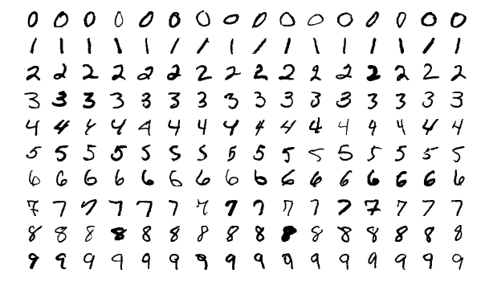
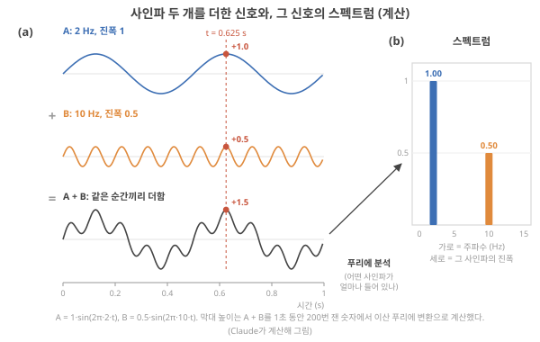
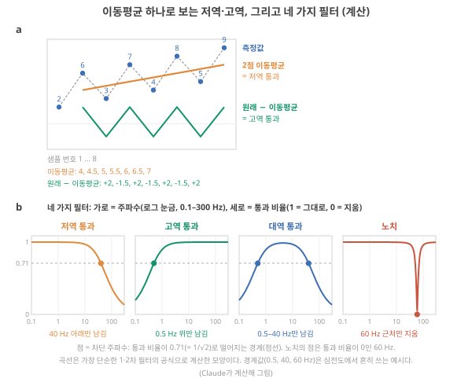
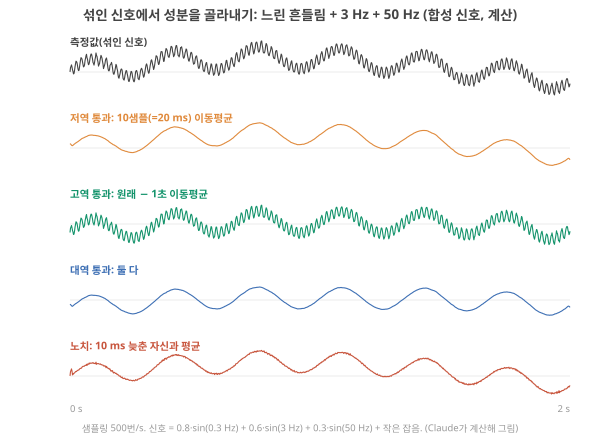
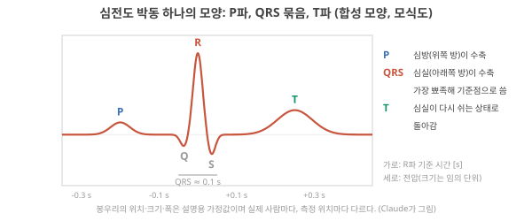
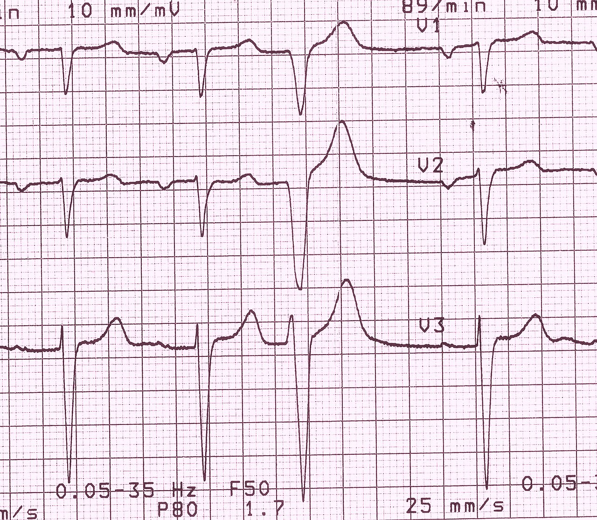
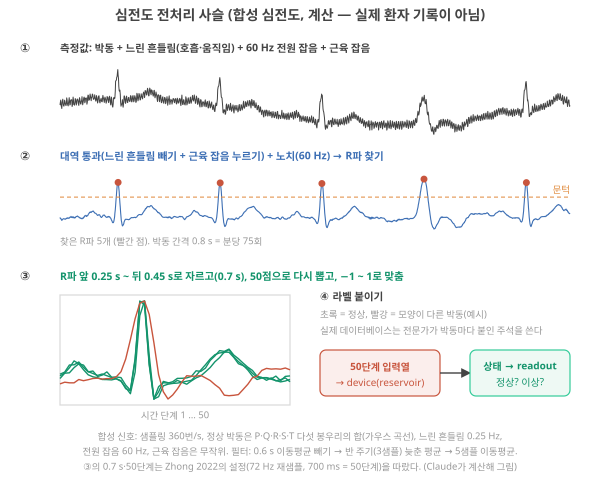
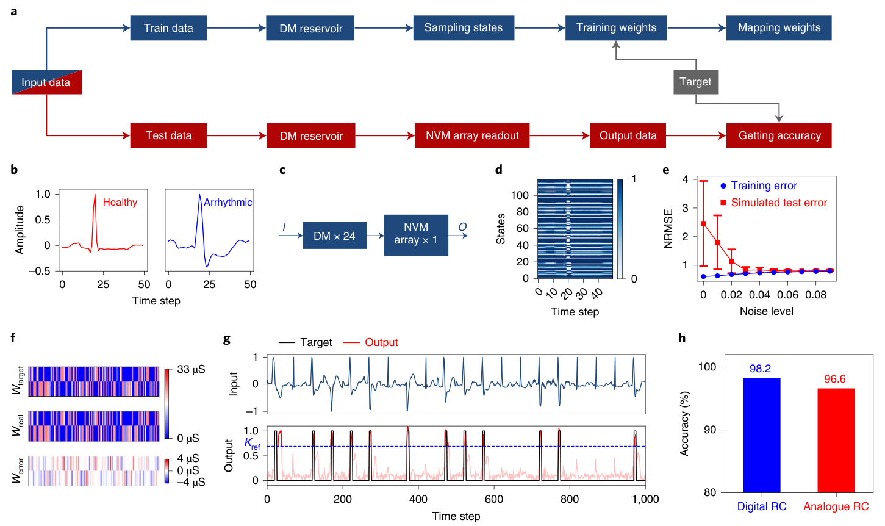

Day 27. 벤치마크와 신호 처리 기초: 필터와 심전도
Phase 3 · 좋은 시스템이란 무엇인가
이번 질문 벤치마크는 무엇을 시험하고, 필터와 전처리는 신호에서 무엇을 바꾸나?
왜 배우나 벤치마크 점수 중 필터·전처리가 한 몫과 device의 몫을 갈라 본다.
오늘의 장면 시간 신호(사인파 합, 심전도) → 스펙트럼 → 필터·전처리 사슬 통과 → device 입력열(박동당 50개)
오늘 반드시 벤치마크 점수는 데이터 + 나누기 + 채점이 정한 범위만 말한다. 필터는 주파수마다 크기를 다르게 줄이는 계산이고 이동평균은 low-pass다.
나중에 봐도 됨 푸리에 식 · 엄밀한 샘플링 · 이동평균 notch 응답 · Zhong 2022 세부
이후 쓰이는 곳 Day 29–30 RC 필터 기준선 · Day 31–32 전처리 에너지·지연 · Day 51–52 몸 안 심전도 신호 사슬 · Day 55–56 시연 고르기
지난 학습 복습
지난 학습 단위(Day 26 · 차원과 비선형성의 평가)의 핵심을 다른 예로 확인합니다. 고르는 즉시 맞았는지와 이유가 보입니다. 틀려도 아래 학습자료는 그대로 열려 있고, 틀린 문제에는 다시 볼 곳이 붙습니다.
사전 테스트 (선택)
사전 테스트 펼치기 · 배우기 전에 짐작해 보는 문제 (선택)
학습자료
Device RC 논문을 펼치면 거의 매번 같은 이름들이 나옵니다. 손글씨 숫자(MNIST), 이상한 이름의 수식(NARMA), 말소리 숫자(spoken digit), 그리고 심전도. 여기서 device RC는 물리 device의 동역학을 계산 자원으로 쓰는 reservoir computing입니다(Day 12의 physical reservoir computing). 짧게 다시 말하면 RC는 두 부분입니다. 입력의 이력을 상태로 바꾸는 고정된 부분인 reservoir(여기서는 device, reservoir의 상태)와, 그 상태 숫자들에 weight를 곱해 더해 답을 내는, 학습하는 마지막 단계인 readout(상태에서 답을 꺼내는 직선 맞추기)입니다. ★ 이번 Day는 위의 이름들이 무엇을 시험하는 과제인지, 그리고 더 중요하게는 무엇을 시험하지 못하는지를 봅니다. 그러려면 먼저 몇 가지 바닥 지식이 필요합니다. 신호의 '주파수'와 '필터'가 무엇인지, 심전도가 어떻게 생겼고 어떻게 다듬어 device에 넣는지, 그림이 어떻게 시간 신호로 바뀌는지. 이 셋을 처음부터 쌓은 뒤 본론으로 갑니다.
이 주제의 질문 순서 — 이번 Day 27에서는 구간 1–3만 읽습니다. 나머지는 Day 28에서 이어집니다(구간 번호는 원래 한 묶음이던 순서 그대로입니다).
- 벤치마크란 무엇이고, MNIST·NARMA·spoken digit은 각각 무엇을 시험하려고 만든 과제인가? RC는 실제로 어디에 시연됐나? → 구간 1
- 신호의 '주파수'는 무엇이고, 필터는 신호에서 무엇을 지우나? (이동평균을 손으로 계산합니다) → 구간 2
- 심전도는 어떻게 생겼고, device에 넣기 전에 어떤 손질을 거치나? → 구간 3
- 그림(정지 영상)은 어떻게 시간 신호가 되나? 그때 '시간'은 누가 정하나? (Day 28에서)
- Device RC 논문의 MNIST는 정말 시간 과제인가? Readout이 일을 다 하고 있지는 않은가? (작은 시뮬레이션으로 직접 봅니다) (Day 28에서)
- NARMA와 spoken digit은 무엇을 검증하고 무엇을 검증하지 못하나? (Day 28에서)
- 벤치마크 성적표를 읽을 때 무엇을 확인해야 하나? (Day 28에서)
1. 벤치마크란 무엇이고, 세 과제는 무엇을 시험하나
끝나면 할 수 있는 것. "벤치마크 성적"이 무엇을 잰 숫자인지, MNIST·NARMA·spoken digit이 각각 어떤 능력을 시험하려는 과제인지, 그리고 RC가 지금까지 어디에 '시연(demonstration)'되었고 그것이 '실제로 쓰인다'와 왜 다른지 말할 수 있다.
왜 필요한가. 두 연구실이 각자 device를 만들었다고 합시다. 한쪽은 "우리 device는 계산을 잘한다", 다른 쪽도 "우리도 잘한다"고 말합니다. 누가 더 나은지 가리려면 같은 문제를 같은 규칙으로 풀게 해야 합니다. 학생들의 실력을 같은 모의고사로 비교하는 것과 같습니다. 이 '모두가 함께 쓰는 문제와 채점 규칙'이 벤치마크(benchmark)입니다. 모의고사 점수가 학생의 모든 능력을 말해 주지 않듯, 벤치마크 점수도 시험지가 묻는 능력만 말해 줍니다. 이번 Day의 질문 전체가 이 한 문장에서 나옵니다.
기초 1: 벤치마크 — MNIST·NARMA·spoken digit이 각각 시험하는 것
벤치마크 하나는 세 부분으로 되어 있습니다. (1) 데이터: 입력과 정답의 묶음. (2) 나누는 규칙: 어느 것으로 학습(training)하고 어느 것으로 채점(시험, test)하는지. 시험 데이터는 학습에 쓰지 않습니다(held-out에서 본 "안 본 데이터에서 맞히는가"). (3) 채점 방법: 분류라면 정확도(accuracy: 맞힌 비율, %), 숫자를 맞히는 과제라면 오차 척도(예: NMSE — 평균 제곱 오차를 정답의 흔들림 크기로 나눈 값. 0이면 완벽, 1이면 "늘 평균값만 말하는 것"과 같은 수준).
과제의 세 종류. Stepney의 튜토리얼은 RC 벤치마크를 셋으로 나눕니다. Stepney 2024, p.676
- 분류(classification): 들어온 입력열이 어느 묶음(클래스)에 속하는지 고른다. 예: TI-46 말소리 데이터의 숫자 부분(spoken digit). 이 교재의 MNIST, 심전도 정상/이상 판별도 여기에 속합니다.
- 흉내(imitation): 어떤 동적 시스템에 같은 입력을 넣었을 때 나올 출력을 흉내 낸다. 예: NARMA.
- 예측(prediction): 시계열의 다음 값을 미리 말한다. 예: Mackey–Glass 방정식(시간 지연이 들어간 혈구 생성 모형에서 나온 불규칙한 시계열 Stepney 2024, p.671), 레이저 세기 기록(Santa Fe).
세 과제가 시험하려는 것. 이름만 듣고 지나가지 않도록, 각각 "입력은 무엇이고, 정답은 무엇이고, 무엇을 잘해야 맞히나"로 적습니다. 표에 앞서 두 과제의 실물을 먼저 봅니다.
MNIST의 실물. 아래 사진에서 볼 것은 두 가지입니다. 같은 숫자도 사람마다 모양이 다르다는 것, 그리고 그림 어디에도 시간 축이 없다는 것.

MNIST 한 장은 가로 28 × 세로 28 = 784칸(픽셀)의 밝기 값이고, 학습 60,000장·시험 10,000장으로 나눠 씁니다(폴더의 Zhong 2026이 쓴 설정). Zhong 2026, p.3
NARMA의 실물. NARMA는 그림이 아니라 숫자 열입니다. 0과 0.5 사이의 무작위 입력 \(u\)를 한 단계에 하나씩 넣으면 정해진 공식이 정답 \(y\)를 하나씩 만들고, 그 공식 안에 "10단계 전 입력 × 지금 입력"이라는 곱이 들어 있어 기억과 비선형을 함께 요구합니다. 이름 뒤의 숫자 N(NARMA10이면 10)은 공식이 몇 단계 전까지를 쓰는지, 즉 요구하는 기억의 길이입니다. 공식은 NARMA에서 직접 돌려 봤습니다.
이제 세 과제를 한 표에 놓습니다. 자세한 내용은 ‘심전도’ 구간과 다음 Day의 ‘그림 → 시간 신호’·‘MNIST는 시간 과제인가’·‘NARMA와 spoken digit’ 구간에서 하나씩 봅니다.
| 과제 | 시스템에 들어가는 입력 | Readout이 내야 할 출력 | 채점 | 잘하려면 필요한 것 (원래 의도) |
|---|---|---|---|---|
| MNIST | 손글씨 숫자 그림 한 장. 28×28 = 784칸(픽셀)마다 밝기 값 하나(Day 27–28의 ‘그림 → 시간 신호’ 구간) | 그림 한 장마다 0–9 중 하나. 실제로는 숫자마다 점수 10개를 내고 가장 큰 것을 고른다(softmax) | 시험 그림 중 맞힌 비율(정확도, %) | 모양을 가르는 능력. 원래는 시간이 없는 과제다 |
| NARMA10 | 0과 0.5 사이의 무작위 수, 한 단계에 하나씩 | 단계마다 숫자 하나: 공식이 만든 정답 \(y(t)\)의 추정값 | 시험 구간의 NMSE(0에 가까울수록 좋음) | 지난 10단계의 기억 + 곱셈(비선형) |
| Spoken digit | 숫자를 말한 녹음. 마이크가 잰 공기 압력을 1초에 수천 번 적은 숫자 목록이고, 대개 귀 모형 같은 전처리(preprocessing)를 거쳐 들어간다(Day 27–28 ‘NARMA와 spoken digit’ 구간) | 녹음 하나마다 0–9 중 하나(MNIST처럼 점수 10개 중 가장 큰 것) | 시험 녹음 중 맞힌 비율(정확도, %) | 약 1초 동안 들어온 소리를 모아 가르는 능력 |
높은 점수가 증명하는 범위. 점수가 높다는 것은 "이 데이터·이 나눔·이 채점에서 시스템 전체(전처리 + device + readout)가 잘 맞혔다"까지입니다. 그 점수 중 얼마가 device의 몫인지, 다른 과제나 실제 사용 조건에서도 그런지는 따로 보여야 합니다. 과제마다 무엇이 증명되고 무엇이 남는지는 ‘심전도’ 구간과 다음 Day의 ‘그림 → 시간 신호’·‘MNIST는 시간 과제인가’·‘NARMA와 spoken digit’ 구간에서 하나씩 보고 ‘성적표 읽는 법’ 구간 표로 모읍니다.
함정 하나를 먼저 적어 둡니다. Stepney는 한 reservoir가 어떤 종류의 벤치마크는 아주 잘하고 다른 종류는 못할 수 있으며, 어떤 과제는 긴 기억과 적은 처리를, 다른 과제는 그 반대를 요구하므로 한 과제의 성적이 다른 과제로 옮겨 간다는 보장이 없다고 씁니다. 그래서 "여러 종류의 벤치마크를 써야 한다"고 권합니다. Stepney 2024, p.677
1-1. RC 응용 지도: 무엇이 '시연'되었나
Liang 리뷰는 전자식 physical reservoir computing이 시연된 과제로 파형 분류·생성, 손글씨 숫자, 말소리 숫자, 생체신호 처리, 부드러운 구동기(soft actuator), 웨어러블, 제스처 분류, 컴퓨터 비전을 듭니다. Liang 2024, p.201 폴더의 논문들로 이 지도를 채우면 아래와 같습니다. 마지막 열이 여기서 가장 중요한 열입니다. 하드웨어로 측정했나, device 모형으로 시뮬레이션했나.
| 응용 갈래 | 폴더의 예 | 결과 | 하드웨어/시뮬레이션 |
|---|---|---|---|
| 시계열 예측 | Pei 2026: Mackey–Glass 예측 | RMSE(평균 제곱 오차의 제곱근) ≈ 0.137 | 측정으로 만든 device 모형의 시뮬레이션 Pei 2026, p.1201 |
| 말소리(spoken digit) | Zhou 2026 (Nat. Nanotech.): AudioMNIST | 95.3% | 대규모 신경망 시뮬레이션 Zhou 2026 (Nat. Nanotech.), p.584, 586 |
| 말소리 | Lee 2026 (ACS Nano): 촉각 이온 게이트 device로 spoken digit | 93.5% | Device 응답을 특징으로 쓴 분류 Lee 2026 (ACS Nano), p.19469 |
| 제스처 | Zhong 2022: 3축 가속도 제스처 4종 | 97.9% | 하드웨어(아날로그 reservoir + 아날로그 readout) Zhong 2022, p.677–678 |
| 심전도(ECG) | Zhong 2022: 부정맥 박동 검출 | 96.6% | 하드웨어 Zhong 2022, p.677 |
| 뇌파(EEG) | Zhou 2026 (Nat. Nanotech.): 발작 조기 검출 | 처음 1–3 s만 넣은 조기 검출에서 최고 85% | 시뮬레이션 Zhou 2026 (Nat. Nanotech.), p.586 |
| 촉각 | Lee 2026 (ACS Nano): 압력 그림 데이터로 추가 시연 | 세부는 보충 자료 | 4-bit 펄스 응답을 측정해 특징으로 씀 Lee 2026 (ACS Nano), p.19469 |
| 센서 안 시각 | 광 시냅스(빛 펄스로 conductance가 바뀌는 device)로 잠재 지문 인식(Singh의 표에 정리된 사례) | — | 펄스 에너지 0.5 nJ, 이후 readout·ADC(숫자와 전압 사이의 변환)는 다 세지 않음 Singh 2026, p.22 |
읽기 전에 세어 보세요. 위 표의 여덟 줄 중, 계산 결과까지 하드웨어로 측정한 것은 몇 줄일까요? 그리고 이 지도에 '실제로 쓰이는 제품'은 있을까요? 바로 아래 문단이 답입니다.
'시연됐다'와 '쓰인다'는 다른 말입니다. 위 표에서 device + readout을 하드웨어로 측정한 결과는 Zhong 2022의 두 줄(제스처, 심전도)뿐이고, Lee 2026은 device 응답을 측정해 특징으로 쓴 뒤 분류는 따로 계산했으며, 나머지는 device 모형의 시뮬레이션이거나 경계가 표에 다 드러나지 않습니다. 해석 그리고 표의 모든 줄은 논문에서 한 번 보인 것이지, 현장에서 쓰이는 것이 아닙니다. 병원의 심전도 기계나 휴대폰의 음성 인식이 physical reservoir computing device로 돌아간다는 기록은 폴더 어디에도 없습니다 미확인. 한 줄을 더 붙입니다.
촉각 device의 논문이 대표 계산 시연으로 말소리 숫자를 골랐다는 점(Lee 2026)은, 벤치마크가 "device가 실제로 감지하는 신호"가 아니라 "비교하기 쉬운 공통 문제"로 골라지는 일이 많다는 것을 보여 줍니다. 해석 응용의 넓은 지도(뉴로모픽 전체, 실제 제품까지)는 Day 51–52에서 다시 그립니다.
- 벤치마크
- 모두가 함께 쓰는 데이터 + 나누는 규칙 + 채점 방법. 시험지가 묻는 능력만 잰다.
- 분류 / 흉내 / 예측
- 입력열의 묶음 고르기 / 같은 입력에 대한 동적 시스템의 출력 따라 하기 / 다음 값 미리 말하기 Stepney 2024, p.676.
- 시연 vs 실제 사용
- 논문에서 한 번 보인 것과 제품·현장에서 쓰이는 것. 폴더의 RC 응용은 모두 앞쪽이다.
- 벤치마크 = 데이터 + 나누기 + 채점. 점수는 시험지가 묻는 능력만 말한다. 한 과제의 성적이 다른 과제로 옮겨 간다는 보장은 없다 Stepney 2024, p.677.
- MNIST는 원래 시간이 없는 그림 분류, NARMA는 10단계 기억 + 곱셈을 요구하는 흉내, spoken digit은 약 1초짜리 소리의 분류다.
- 폴더의 RC 응용(예측·말소리·제스처·심전도·뇌파·촉각·시각)은 모두 '시연'이고, 그중 상당수가 device 모형의 시뮬레이션이다.
- 남은 질문: 소리·심전도 같은 진짜 시간 신호는 device에 넣기 전에 어떻게 다듬나? 그 첫 도구가 필터다 → ‘주파수와 필터’ 구간.
2. 주파수와 필터: 신호에서 무엇을 지우나
끝나면 할 수 있는 것. 주파수(Hz)가 무엇인지 말하고, 이동평균을 손으로 계산해 그것이 왜 '저역 통과'인지 설명하고, 저역·고역·대역·노치 필터가 각각 무엇을 지우는지 심전도의 잡음과 짝지어 말할 수 있다.
왜 필요한가. 심전도나 말소리를 device에 넣는 논문은 거의 예외 없이 "필터를 걸었다"는 문장을 지나갑니다. 필터가 무엇인지 모르면, device가 한 일과 필터가 미리 해 둔 일을 가를 수 없습니다. 그리고 곧 보겠지만 기억이 있는 device 자체가 일종의 필터입니다.
기초 2: 필터 — 이동평균에서 저역·고역·대역·노치까지
주파수: 1초에 몇 번 되풀이하나. 그네가 앞뒤로 한 번 왔다 갔다 하는 데 0.5초가 걸리면 1초에 2번 되풀이합니다. 이것을 주파수(frequency) 2 Hz(헤르츠)라고 합니다. 한 번 되풀이하는 데 걸리는 시간이 주기(period)이고, 주기 = 1 ÷ 주파수입니다(2 Hz면 0.5 s). 몇 가지 크기 감각입니다.
- 심장 박동: 1분에 75번이면 1초에 1.25번, 즉 1.25 Hz(주기 0.8 s).
- 숨쉬기: 1분에 15번이면 0.25 Hz(주기 4 s).
- 가정용 전기: 전압의 방향이 1초에 60번(한국·미국) 또는 50번(유럽) 되풀이합니다. 그래서 주변 전선에서 새어 들어오는 잡음이 정확히 60 Hz(또는 50 Hz)로 떨립니다. 확인 근거: 전원이 나라에 따라 50 또는 60 Hz이고 그것이 심전도 잡음이 된다는 것은 GE HealthCare, "A guide to ECG signal filtering", 한국 계통이 220 V·60 Hz라는 것은 국내 전력품질 연구 KoreaScience JAKO200544948140080
사인파: 가장 단순한 되풀이. 그네의 위치를 시간에 따라 그리면 매끄럽게 올라갔다 내려오는 물결이 됩니다. 이 모양이 사인파(sine wave)입니다. 사인파 하나는 숫자 두 개로 정해집니다. 얼마나 빨리 되풀이하나(주파수, Hz)와 얼마나 크게 흔들리나(진폭(amplitude): 가운데 선에서 꼭대기까지의 높이).
무엇을 볼지. 그림 1(a)에는 사인파 두 개(A: 1초에 2번·진폭 1, B: 1초에 10번·진폭 0.5)와 그 둘을 더한 선이 위아래로 놓여 있고, (b)에는 그 합을 '성분별 크기'로 다시 적은 막대 두 개가 있습니다. 먼저 빨간 점선 한 줄만 따라가 보세요.

① 두 사인파를 더하면. 신호를 더한다는 것은 같은 순간의 값끼리 더한다는 뜻입니다. 빨간 점선 순간(\(t\) = 0.625 s)에서 A는 +1.0, B는 +0.5이므로 합은 +1.5입니다. 모든 순간에 이렇게 더하면 맨 아래의 꼬불꼬불한 선이 됩니다. 눈으로는 하나의 복잡한 선이지만, 사실 빠르기가 다른 두 물결이 겹친 것입니다.
② 식으로 적으면. 사인파는 '진폭 × sin(2π × 주파수 × 시각)', 기호로 \(A\sin(2\pi f t)\)입니다. \(t\)는 시각(s), \(f\)는 주파수(Hz), \(A\)는 진폭(그림의 사인파 이름 A와는 다른 기호), \(2\pi\)는 '한 바퀴'를 뜻하는 상수라서 \(f\,t\)가 1 늘 때마다 한 번 되풀이합니다. 그림 1의 A는 \(1 \cdot \sin(2\pi \cdot 2 \cdot t)\), B는 \(0.5 \cdot \sin(2\pi \cdot 10 \cdot t)\)입니다. 확인: \(t\) = 0.625 s에서 A는 \(2 \times 0.625 = 1.25\)바퀴, B는 \(10 \times 0.625 = 6.25\)바퀴를 돌아 둘 다 꼭대기(한 바퀴의 4분의 1 지점)에 있으므로 +1과 +0.5입니다.
③ 스펙트럼: 거꾸로, 어떤 사인파가 얼마나 들어 있나. 꼬불꼬불한 합만 받았을 때 "2 Hz짜리가 진폭 1, 10 Hz짜리가 진폭 0.5 들어 있다"를 되찾는 계산이 푸리에 분석(Fourier analysis, 그 계산을 푸리에 변환이라고도 합니다)이고, 그 결과를 가로축 = 주파수, 세로축 = 그 주파수 성분의 진폭으로 그린 것이 스펙트럼(spectrum)입니다(그림 1(b): 막대 두 개). 우리가 재는 신호는 거의 모두 이렇게 여러 사인파의 합으로 나타낼 수 있다는 것이 푸리에 분석의 출발점입니다.
화공에 빗대면 혼합물을 분광기에 넣어 "어느 파장에서 얼마나 흡수하나"를 늘어놓는 것과 닮았습니다. 맞는 곳은 '섞인 것을 성분별 크기로 늘어놓는다'는 점이고, 다른 곳은 분광기는 물질이 빛을 흡수하는 정도를, 신호의 스펙트럼은 신호 자체를 이루는 되풀이 성분을 늘어놓는다는 점입니다.
④ 컴퓨터는 점으로 잰다: 샘플링. 그림 1의 선은 매끄러워 보이지만, 컴퓨터에 담긴 신호는 일정한 간격으로 잰 값들의 목록입니다. 1초에 몇 번 재느냐가 샘플링률(sampling rate, 단위: 번/s 또는 Hz)이고, 그 숫자 목록이 시계열입니다(시계열에서 "1초에 250번 재면 0.004 s마다 한 점"을 계산했습니다). 그림 1은 1초에 200번 잰 점 200개로 계산했습니다. 그림 1의 A(2 Hz)로 작게 해 보면:
- 1초에 8번 재면 0.125 s마다 0, +1, 0, −1, 0, +1, 0, −1. 한 번 되풀이하는 동안 4번 재니 오르내림이 숫자 목록에 남습니다.
- 1초에 4번만 재면 0.25 s마다 0, 0, 0, 0. 매번 물결이 가운데를 지나는 순간에 재서, 떨림이 목록에서 사라집니다.
같은 Hz, 다른 뜻. 샘플링률도 Hz로 적지만 뜻이 다릅니다. 샘플링률은 "우리가 1초에 몇 번 재나", 주파수는 "신호가 1초에 몇 번 되풀이하나"입니다. 위의 작은 예가 보여 주는 규칙이 있습니다. 한 번 되풀이하는 동안 두 번보다 많이 재야 그 떨림이 숫자 목록에 제대로 남습니다(샘플링 정리. 샘플링률의 절반을 나이퀴스트 주파수(Nyquist frequency)라고 부릅니다). 1초에 500번 재면 250 Hz보다 빠른 떨림은 담지 못하고, 50 Hz 떨림은 한 주기에 10번 재므로 충분히 담깁니다. 뒤에 필터를 거는 합성 신호(그림 3)가 1초에 500번 잰 것이라, 2초면 숫자 1,000개입니다.
필터를 스펙트럼으로 말하면. 필터(filter)는 이 막대들의 높이를 주파수마다 다른 비율로 줄이는 계산(또는 회로)입니다. 그림 1에서 10 Hz 막대만 0으로 만들면 A만 남고, 2 Hz 막대만 없애면 B만 남습니다. 체(거름망)가 알갱이 크기로 거르듯, 필터는 빠르기(주파수)로 거릅니다. 뒤에 필터를 거는 합성 신호(그림 3)의 맨 위 줄도 같은 구조입니다. 아주 느린 흔들림(0.3 Hz), 우리가 원하는 3 Hz의 출렁임, 빠른 50 Hz 떨림, 세 사인파의 합(+ 작은 잡음)이라 스펙트럼으로 그리면 0.3, 3, 50 Hz에 막대 셋이 섭니다.
가장 단순한 필터: 이동평균. 측정값이 8개 있습니다: 2, 6, 3, 7, 4, 8, 5, 9. 잘 보면 두 가지가 섞여 있습니다. 전체적으로는 천천히 올라가고(2 → 9), 한 칸마다 위아래로 들쭉날쭉합니다(가장 빠른 떨림). 이웃한 두 값의 평균을 차례로 구해 봅시다.
단계 1. 첫째와 둘째의 평균: (2 + 6) ÷ 2 = 4.
단계 2. 한 칸 옮겨 둘째와 셋째: (6 + 3) ÷ 2 = 4.5. 이렇게 '창'을 한 칸씩 옮기며 평균을 내는 것을 이동평균(moving average)이라고 합니다.
단계 3. 끝까지 하면 4, 4.5, 5, 5.5, 6, 6.5, 7. 들쭉날쭉(빠른 성분)이 사라지고 천천히 올라가는 흐름(느린 성분)만 남았습니다. 느린 것은 통과시키고 빠른 것을 지웠으니 저역 통과(low-pass) 필터입니다.
단계 4. 이번에는 원래 값에서 이동평균을 뺍니다. 둘째 값 6에서 4를 빼면 +2, 셋째 값 3에서 4.5를 빼면 −1.5, … 결과는 +2, −1.5, +2, −1.5, +2, −1.5, +2. 천천히 올라가던 흐름은 사라지고 들쭉날쭉만 남았습니다. 빠른 것만 남겼으니 고역 통과(high-pass)입니다.

왜 이동평균이 빠른 것을 지우나. 빠른 떨림은 바로 옆 값끼리 반대 방향입니다(+, −, +, −). 둘을 평균하면 서로 상쇄됩니다. 느린 흐름은 옆 값끼리 거의 같아서 평균해도 그대로입니다. 이 생각을 한 걸음 더 밀면 아주 쓸모 있는 사실이 나옵니다. 사인파를 한 주기 전체에 걸쳐 평균하면 0이 됩니다(올라간 만큼 내려가므로). 1초에 500번 재는 신호에서 50 Hz 떨림의 한 주기는 0.02 s, 즉 10샘플입니다. 그러니 10샘플 이동평균은 50 Hz를 정확히 지웁니다. 그림 3의 둘째 줄이 그것입니다(0.3 Hz + 3 Hz + 50 Hz가 섞인 신호에 이동평균을 건 결과).

네 가지 필터. 무엇을 남기고 무엇을 지우느냐로 이름이 붙습니다.
- 저역 통과(low-pass): 느린 것만 남김. 빠른 잡음(근육 떨림, 전기 잡음)을 지울 때.
- 고역 통과(high-pass): 빠른 것만 남김. 아주 느린 흔들림(호흡이나 몸 움직임 때문에 신호의 바닥 높이, 즉 기저선(baseline)이 출렁이는 것)을 지울 때. (이 기저선은 신호의 바닥 높이를 말하고, 이 교재의 '기준선'(device를 뺀 비교용 baseline, held-out 성능과 기준선)과는 다른 말입니다.) 위의 "원래 − 이동평균"이 가장 단순한 예입니다.
- 대역 통과(band-pass): 가운데 한 구간만 남김. 저역과 고역을 차례로 걸면 됩니다. 환자 감시용 심전도에서는 흔히 대략 0.5–40 Hz를 남깁니다 미확인. 진단용 12유도 심전도는 박동 모양을 덜 일그러뜨리려고 더 넓게, 아래 0.05 Hz·위 150 Hz를 권고합니다(Kligfield et al. 2007, AHA/ACCF/HRS 권고 Part I). 확인 Heart Rhythm 4, 394, 공개 요약으로 대조
- 노치(notch): 딱 한 주파수 근처만 좁게 지움. 50/60 Hz 전원 잡음처럼 정확한 한 주파수의 잡음을 지울 때. 가장 단순한 노치는 반 주기 늦춘 자기 자신과 평균하는 것입니다. 50 Hz의 반 주기는 0.01 s(500번/s에서 5샘플)이고, 반 주기 늦춘 사인파는 부호가 정확히 반대라 더하면 0이 됩니다. 그림 3의 맨 아래 줄입니다.
그림 2(b) 읽는 법. 가로축은 주파수, 세로축은 "그 주파수의 사인파가 필터를 지나면 진폭이 몇 배가 되나"(통과 비율)입니다. 어떤 주파수에서 곡선이 0.5라면 스펙트럼에서 그 막대의 높이가 절반이 됩니다. 막대마다 이 비율을 곱한 것이 필터를 지난 신호의 스펙트럼입니다. 가로축은 로그 눈금(한 칸이 10배: 0.1, 1, 10, 100 Hz)이라 아주 느린 성분과 빠른 성분을 한 그림에 담습니다.
차단 주파수(cutoff frequency). 목록의 '40 Hz 아래', '0.5 Hz 위' 같은 경계값을 차단 주파수라고 합니다. 실제 필터는 경계에서 칼같이 끊지 않고 서서히 줄이므로, 경계를 어디로 볼지 약속이 필요합니다. 흔한 약속은 통과 비율이 \(1/\sqrt{2} \approx 0.71\)로 떨어지는 주파수이고, 그림 2(b)의 점과 점선이 그 자리입니다. 예를 들어 그림의 40 Hz 저역 통과(가장 단순한 1차 공식)는 40 Hz 성분을 0.71배로, 60 Hz 성분을 0.55배로 줄입니다. [Claude 계산] 그러니 '40 Hz 아래만 남김'은 "40 Hz 위를 0으로 만든다"가 아니라 "40 Hz 근처부터 눈에 띄게 줄이기 시작한다"는 뜻입니다.
가장 단순한 노치는 좁지 않다. 위의 '반 주기 늦춘 평균'의 통과 비율은 \(|\cos(\pi \times \text{주파수} \times 0.01\ \text{s})|\)입니다. 계산하면 3 Hz는 0.996배로 거의 그대로지만, 25 Hz도 0.71배로 깎이고, 150 Hz처럼 50 Hz의 홀수 배인 성분도 함께 지워집니다(100 Hz는 그대로 통과). [Claude 계산] 원리를 보이기에는 좋지만, 실제 장비의 노치는 더 정교한 공식으로 50/60 Hz 근처만 좁게 지웁니다(그림 2(b)의 빨간 곡선(노치)).
필터의 대가. 필터는 공짜가 아닙니다. (1) 이동평균은 과거 값을 모아야 하므로 결과가 조금 늦게 나옵니다(10샘플 평균이면 대략 5샘플, 즉 10 ms 늦음). 해석 (2) 원하는 성분까지 조금씩 깎습니다(그림 2(b)의 곡선이 칼같이 꺾이지 않는 것). (3) 필터는 소프트웨어 계산이거나, 전압의 크기 자체로 값을 다루는 아날로그 회로(값을 "어떻게 표현하는가")입니다. 아날로그 필터는 증폭기와 함께 센서 바로 뒤에 붙어 '아날로그 전단부(analog front-end)'를 이룹니다. 어느 쪽이든 에너지와 시간을 씁니다. 이 비용은 Day 31–32에서 시스템 비용에 넣습니다.
RC와의 연결: 기억이 있는 device는 저역 통과 필터처럼 동작한다. Phase 2의 leak 노드 \(x \leftarrow d\,x + (1-d)\,u\)를 떠올려 보세요. 입력이 들어올 때마다 상태 \(x\)를 조금씩 새 입력 \(u\) 쪽으로 옮기는 규칙이고(\(0<d<1\)), \(d\)는 이전 상태가 다음 단계에 남는 비율입니다(\(d\) = 0.8이면 80%가 남고, 한 단계에 20%씩 줄어든다는 말과 같습니다. 식에 들어가는 숫자는 남는 몫입니다). LIF 뉴런의 남는 비율 0.9(Day 5의 ‘leak과 남는 비율’), fading memory의 남는 비율 \(d\)와 같은 계수라, 입력 간격이 \(\Delta t\)이고 device의 시간상수가 \(\tau\)이면 \(d = e^{-\Delta t/\tau}\)입니다.
그래서 같은 device라도 입력 간격을 바꾸면 \(d\)가 바뀝니다. 이 규칙은 "최근 값일수록 크게, 오래된 값일수록 작게" 쳐서 평균하는 가중 이동평균(weighted moving average)입니다. 그래서 빠른 떨림은 깎이고 느린 변화는 남습니다. 즉 이 선형 leak 모형으로 나타낼 수 있는 device는 그 자체로 저역 통과 필터처럼 동작합니다(\(\tau\)가 클수록 더 느린 것만 남김). 포화나 문턱 같은 비선형이 큰 device는 이 그림에서 벗어날 수 있습니다. 해석 Lee 2025(npj)가 주파수 분석에서 device의 "조절 가능한 저역 통과 특성"을 보인 것이 이것입니다. Lee 2025 (npj), p.1 이 사실은 Day 29–30의 질문 "필터나 단순 RC 회로로 같은 응답이 나오면 device는 무엇을 더하나?"로 곧장 이어집니다.
1초에 500번 재는 신호에서 50 Hz 떨림을 '반 주기 늦춘 자신과 평균'으로 지우려면 몇 샘플 늦춰야 할까요? 그리고 1초에 360번 재는 심전도에서 60 Hz를 지우려면? 계산해 두고 아래 점검으로 확인하세요. 첫 세 문항은 이동평균의 풀이 예시 → 일부 채우기 → 혼자 풀기입니다.
- 샘플링률
- 1초에 값을 몇 번 재나 [번/s, Hz]. 500번/s면 2초에 숫자 1,000개.
- 주파수 / 주기
- 1초에 몇 번 되풀이하나 [Hz] / 한 번 되풀이하는 시간 [s]. 주기 = 1/주파수. 한 주기에 두 번보다 많이 재야 그 떨림이 남는다.
- 사인파 / 진폭 / 스펙트럼
- 매끄럽게 되풀이하는 물결 \(A\sin(2\pi f t)\) / 가운데에서 꼭대기까지의 높이 / 신호에 어떤 주파수의 사인파가 얼마나 들어 있나를 늘어놓은 그림(푸리에 분석의 결과).
- 이동평균
- 창을 한 칸씩 옮기며 평균. 가장 단순한 저역 통과. 원래 − 이동평균은 고역 통과.
- 저역 / 고역 / 대역 / 노치
- 느린 것만 / 빠른 것만 / 가운데 구간만 남김 / 한 주파수 근처만 지움.
- 주파수 = 1초에 되풀이하는 횟수 [Hz]. 신호는 사인파들의 합이고, 스펙트럼은 주파수마다 그 성분의 진폭을 늘어놓은 것이다(2 Hz·진폭 1 + 10 Hz·진폭 0.5 → 막대 두 개). 필터는 막대 높이를 주파수마다 다른 비율로 줄인다.
- 이동평균은 빠른 떨림을 상쇄해 지운다(저역). 원래 − 이동평균은 느린 흐름을 지운다(고역). 한 주기 길이의 이동평균, 반 주기 늦춘 평균은 그 주파수를 정확히 지운다.
- 필터는 늦어지고, 원하는 성분도 조금 깎고, 에너지를 쓴다 → Day 31–32.
- 기억이 있는 device 자체가 저역 통과 필터다 Lee 2025 (npj), p.1. 남은 질문: 실제 생체 신호(심전도)에서는 어떤 잡음을 어떤 필터로 지우나? → ‘심전도’ 구간.
3. 심전도: 신호의 모양과 전처리 사슬
끝나면 할 수 있는 것. 심전도 한 박동의 P·QRS·T가 무엇인지, 어떤 잡음이 섞이는지, 그리고 "필터 → R파 찾기 → 박동 자르기 → 정규화 → 라벨"이라는 사슬이 각각 무슨 일을 하고 어떻게 device 입력으로 이어지는지 Zhong 2022의 숫자로 따라갈 수 있다.
왜 필요한가. 폴더에서 하드웨어로 측정한 RC 시연 중 가장 잘 정리된 것이 Zhong 2022의 심전도 부정맥 검출입니다(‘벤치마크’ 구간 표). 이 논문의 96.6%라는 숫자가 무엇을 증명하는지 판단하려면, 그 숫자가 나오기 전에 신호가 어떤 손질을 거쳤는지 알아야 합니다.
심전도는 처음 나오는 장면이 아닙니다. 몸에 붙인 전극으로 읽는 심전도(ECG, 심장의 전기 신호)의 가슴 패치(피부 전극 두 개로 심장의 전기 신호를 읽고 박동마다 정상/이상을 표시)와, Day 9에서 그 패치를 적합성 질문 사다리에 올려 본 예(작은 예: 심전도 패치를 사다리에 올리기)가 같은 신호입니다. 여기서는 그 신호가 어떻게 생겼고, 숫자 목록이 device 입력이 되기까지 무엇을 거치는지 봅니다. ★ 심전도는 이 사슬을 보이는 예 하나일 뿐, 목표가 아닙니다. 같은 "필터 → 기준점·창으로 자르기 → 정규화 → 라벨" 사슬은 ‘벤치마크’ 구간 표의 가속도 제스처·뇌파·촉각 신호에도, 땀 속 이온 농도나 변형(strain)을 재는 이온트로닉 센서의 신호에도 거의 그대로 걸리고, 바뀌는 것은 잡음의 빠르기와 필터 경계값입니다. 해석
기초 3: 심전도(ECG) — 모양, 잡음, 전처리 사슬
무엇인가. 심장 근육은 수축하기 직전에 전기 신호를 냅니다. 이 신호는 몸을 타고 퍼져 피부에 붙인 전극 사이에 아주 작은 전압 차이(대략 1 mV 안팎 미확인)를 만듭니다. 그 전압을 시간에 따라 기록한 것이 심전도(electrocardiogram, ECG)입니다.
무엇을 볼지. 그림 4는 박동 하나를, 가장 뾰족한 봉우리(R)를 시간 0으로 두고 그린 것입니다. 봉우리는 다섯 개(P, Q, R, S, T)이고, 이름이 붙은 묶음은 셋입니다. 가로축 한 칸이 0.2 s라는 것만 먼저 보세요.

박동 하나의 모양. 정상 박동 하나에는 이름 붙은 세 부분이 있습니다(그림 4를 왼쪽에서 오른쪽으로).
- P파: 작고 둥근 봉우리. 심장의 위쪽 방(심방, atrium)이 수축할 때.
- QRS 묶음: 아래로 살짝(Q) — 위로 크고 뾰족하게(R) — 아래로(S). 아래쪽 방(심실, ventricle)이 수축할 때. 0.1 s 안팎으로 짧고 가장 큽니다.
- T파: 넓고 둥근 봉우리. 심실이 다시 쉬는 상태로 돌아갈 때.
쉬고 있는 어른의 박동은 1분에 60–100번 정도 되풀이합니다(박동 간격 0.6–1 s, 운동선수는 1분에 40–50번도 흔함). 확인 미국심장협회 기준을 인용한 UCLA Health, "Understanding resting heart rate"로 대조 부정맥(arrhythmia)은 이 리듬이나 모양이 비정상인 것이고, 모양이 다른 박동이 섞이는 경우가 많습니다.

0.05–35 Hz는 기계가 이미 건 대역 통과 범위, F50은 50 Hz 전원 잡음 필터를 켠 표시로 보인다 [해석]. ‘주파수와 필터’ 구간의 필터가 기록지에 벌써 걸려 있다. (3) 25 mm/s, 10 mm/mV: 굵은 칸(5 mm) 하나가 가로 0.2 s, 세로 0.5 mV다. 출처: G.steph.rocket, Wikimedia Commons, CC BY-SA 3.0.섞이는 잡음과 그 빠르기. ‘주파수와 필터’ 구간의 필터가 바로 여기서 쓰입니다. 각 잡음이 어느 빠르기에 있는지 알면 무엇으로 지울지가 정해집니다. 숨쉬기에 따른 기저선 흔들림이 0.5 Hz 아래이고 전원선 잡음이 50 또는 60 Hz라는 것은 확인, 근육 잡음의 '수십 Hz 이상'은 미확인입니다. GE HealthCare 공개 해설로 대조
| 잡음 | 원인 | 빠르기 | 지우는 필터 |
|---|---|---|---|
| 기저선 흔들림(baseline wander) | 숨쉬기, 몸 움직임, 전극과 피부의 접촉 변화 | 아주 느림(0.5 Hz 아래) | 고역 통과 |
| 전원선 잡음 | 주변 전선의 50/60 Hz 교류 | 정확히 50 또는 60 Hz | 노치 |
| 근육 잡음 | 팔·가슴 근육의 전기 활동 | 빠름(수십 Hz 이상) | 저역 통과 |
전처리 사슬. device나 컴퓨터에 넣기 전에 대개 여섯 단계로 다듬고, 각 단계는 device가 아니라 사람이 짠 계산이 특정 잡음이나 크기 차이를 미리 지우는 일입니다. 무엇을 볼지. 그림 5는 합성 심전도 4초가 그 단계를 지나는 모습입니다. 그림의 ① → ② 사이에 아래 단계 1–3(필터 둘과 R파 찾기)이, ② → ③ 사이에 단계 4–5(자르기와 정규화)가 일어나고, ④가 단계 6(라벨)입니다. 그림을 먼저 위에서 아래로 훑은 뒤 단계 상자를 하나씩 여세요.

단계마다 "무엇을 하나"와 "왜"를 적습니다.
단계 1 · 대역 통과. 고역 통과로 기저선 흔들림을, 저역 통과로 근육 잡음을 지웁니다. 박동 모양이 들어 있는 가운데 구간(예: 감시용으로 흔한 0.5–40 Hz, ‘주파수와 필터’ 구간의 '네 가지 필터')만 남깁니다.
단계 2 · 노치. 대역 안에 남은 50/60 Hz 전원 잡음을 좁게 지웁니다. 1초에 360번 재는 신호라면 60 Hz의 반 주기는 3샘플이므로, 가장 단순하게는 3샘플 늦춘 자신과 평균합니다.
단계 3 · R파 찾기. 가장 뾰족한 R파를 박동의 기준점으로 삼습니다. 가장 단순한 방법은 "문턱보다 높고, 양옆보다 높고, 직전 R파에서 0.25 s 이상 떨어진 점"을 고르는 것입니다(그림 5의 빨간 점). 실제로는 더 정교한 방법을 씁니다. 널리 쓰이는 Pan–Tompkins 방법(1985)은 신호의 기울기·크기·폭을 함께 보고 문턱을 스스로 조정하며, MIT-BIH 데이터에서 QRS의 99.3%를 찾았다고 보고합니다. 확인 IEEE Trans. Biomed. Eng. 32, 230 초록으로 대조 공개 데이터베이스는 전문가가 박동마다 위치와 종류를 적어 둔 주석을 함께 줍니다.
단계 4 · 박동(또는 창)으로 자르기. R파 앞뒤로 정해진 길이만큼 잘라 박동 하나를 한 표본으로 만듭니다. 연속 신호를 정해진 길이(예: 몇 초)의 창으로 자르는 방식도 있습니다.
단계 5 · 정규화(normalization). 사람마다, 전극 위치마다 크기가 다르므로 각 표본을 정해진 범위(예: −1 ~ 1)로 늘이거나 줄입니다. Device에 거는 전압 범위를 맞추는 일이기도 합니다(전처리에서 정규화와 입력 스케일링을 다룹니다).
단계 6 · 라벨(label). 표본마다 정답(정상/부정맥)을 붙입니다. 학습과 채점에 쓰입니다.
이 사슬이 reservoir로 이어지는 법. 단계 5까지 마친 표본은 "50개의 숫자 목록"입니다. 이 숫자들을 차례로 전압으로 바꿔(숫자를 전압으로 바꾸는 장치가 DAC, 숫자와 전압 사이의 변환) device에 겁니다. ★ 숫자 하나가 device에 머무는 시간이 입력 간격이고, 이 간격과 device의 시간상수가 맞아야 박동 하나의 모양이 상태에 담깁니다(시간척도 정합: device가 너무 빨리 잊으면 앞부분이 사라지고, 너무 느리면 한 입력이 남기는 변화가 너무 작아 구분이 흐려진다). 여러 device에 같은 입력을 서로 다른 '무게'로 퍼뜨려 다양한 상태를 만드는 것이 마스크입니다(마스크). Device 상태를 일정한 순간마다 읽어 readout(학습한 가중합)이 "정상/이상"을 냅니다.
3-1. 실제 예: Zhong 2022의 부정맥 검출
이제 폴더의 하드웨어 시연을 위 사슬에 맞춰 읽습니다. 숫자는 모두 원문 그대로입니다. Zhong 2022, p.675
- 데이터: MIT-BIH 부정맥 데이터베이스. 피험자 48명의 30분짜리 심전도 기록(원문 표현. 데이터베이스 설명으로는 기록 48개가 피험자 47명에서 나왔고 두 기록이 같은 사람이며, 1초에 360번 잰 기록이다 확인). PhysioNet MIT-BIH Arrhythmia Database; Moody & Mark 2001, IEEE Eng. Med. Biol. Mag. 20, 45로 대조
- 재샘플링(resampling): 원래 파형을 72 Hz(1초에 72번)로 다시 뽑음. 더 촘촘히 잰 원래 기록에서 1초에 72개의 값만 새로 계산해 숫자 목록을 짧게 만드는 일이다. ‘주파수와 필터’ 구간의 규칙(한 주기에 두 번보다 많이 재야 남는다)대로 약 36 Hz보다 빠른 성분은 이 목록에 담기지 않는다. 박동의 큰 모양은 남고 더 빠른 세부는 버린 셈이다. 해석
- 자르기: 박동 하나를 700 ms, 즉 50 시간 단계로 자름(72 × 0.7 = 50.4이므로 약 50).
- 정규화: 박동마다 크기를 [−1, 1]로 맞춤.
- 표본 수와 나누기: 박동 10,000개(정상 5,000, 부정맥 5,000). 무작위로 고른 1,000개로 학습, 나머지 9,000개로 시험.
- 입력 방식: 박동들을 무작위로 이어 붙인 1차원 신호를 24개의 휘발성 memristor 노드에 동시에(memristor는 흘러간 전하·걸린 전압의 이력에 따라 저항이 바뀌는 device이고, 휘발성은 전압을 끄면 저절로 원래대로 돌아온다는 뜻), 노드마다 다른 마스크를 곱해 넣음. 마스크 길이가 5라서 노드 하나가 한 시간 단계에 상태 5개를 내고, 상태는 시간 단계마다 120개(24 × 5).
- Readout: 값을 계속 유지하는 비휘발 memristor를 격자로 늘어놓은 배열(Day 7–8의 crossbar)에서 전류로 가중합 → 출력이 부정맥 박동에서 봉우리를 그리고, 기준값 \(K_{ref}\)를 넘으면 부정맥으로 판정.
- 결과: 정확도 96.6%, 같은 구성을 숫자 계산으로 돌린 완전 디지털 RC의 98.2%에 가까움. Zhong 2022, p.677

이 시연이 검증하는 것. 실제 생체 신호의 박동(원래 0.7 s, 50단계)을 아날로그 device가 처리하고, 아날로그 readout까지 붙여 디지털 RC에 가까운 정확도를 냈다는 것. 진짜 시간 신호이고 하드웨어라는 점에서 폴더에서 가장 단단한 시연 중 하나입니다. 다만 저자들이 쓴 '실시간'은 신호가 중간 저장 없이 흘러간다는 뜻으로 읽어야 합니다. 입력은 저장된 기록을 마이크로컨트롤러(장치를 제어하는 작은 컴퓨터 칩)의 DAC로 다시 내보낸 것이고, 마스크 한 칸의 폭 δ = 0.2 ms × 마스크 길이 5로 보면 한 시간 단계가 약 1 ms라서, 박동 하나(50단계)가 원래의 0.7 s가 아니라 약 50 ms 안에 들어간 것으로 보입니다 Zhong 2022, p.677, 679 해석 ★ 그러니 원래 심박 속도에서 device의 시간척도가 맞는지는 이 시연이 직접 보이지 않았습니다.
검증하지 못하는 것. 해석
- 원시 입력 기준선이 없다. 50개 숫자를 device 없이 같은 readout에 넣으면 몇 %인지 본문에 없습니다. Day 10의 증거 사다리로 말하면 4단(held-out 성능)까지는 섰지만, 5단(기준선 비교)의 상대가 '같은 알고리즘의 디지털 구현'뿐이라 "device가 readout 이상으로 무엇을 더했나"는 열린 질문입니다. 박동 모양이 정상과 이상에서 크게 다르다면(그림의 b) 단순 선형 분류기도 높은 점수를 낼 수 있지만, 실제로 그런지는 그 기준선을 돌려 봐야 압니다.
- 전처리는 미리 소프트웨어로 했다. 재샘플링·자르기·정규화를 마친 박동을 넣었습니다. 실제 기기라면 이 사슬(특히 R파 찾기)도 어딘가에서 계산해야 합니다.
- 같은 사람의 박동이 학습과 시험에 함께 들어갔을 수 있다. 박동 단위로 무작위로 나눴기 때문입니다. 그렇다면 "처음 보는 사람의 심장"에서의 성능은 시험되지 않았습니다.
- 클래스 비율(class balance). 정상과 부정맥을 5,000 대 5,000으로 맞췄습니다. 실제 기록에서는 정상 박동이 훨씬 많고(MIT-BIH 전체 약 11만 개 박동 주석 가운데 정상(N) 박동이 75,052개, 약 3분의 2 확인 PhysioNet 박동 표), 그 경우 정확도 하나로는 부족합니다(정상이 95%인 데이터라면 늘 ★ '정상'이라고만 답해도 95%). Singh은 클래스 비율이 다르면 균형 정확도(balanced accuracy: 클래스마다 정확도를 따로 구해 평균한 값)나 macro-F1(클래스별 성적을 고르게 반영하는 다른 지표)을 함께 보고하라고 권합니다. Singh 2026, p.12
"심전도로 시연했으니 웨어러블 심장 모니터에 바로 쓸 수 있다" — 시연과 사용 사이에는 이 사슬 전체(필터·R파 찾기·자르기를 누가 어디서 계산하나), 처음 보는 사람에 대한 성능, 실제 클래스 비율, 장시간 안정성이 놓여 있습니다. 논문이 그중 무엇을 보였는지 하나씩 확인해야 합니다. 몸 안 장치의 전체 사슬은 Day 51–52에서 다시 그립니다.
- 심전도(ECG)
- 심장의 전기 활동을 피부 전극으로 잰 시간 신호. 박동 하나 = P파, QRS 묶음, T파.
- 기저선 흔들림 / 전원선 잡음 / 근육 잡음
- 아주 느린 출렁임(고역 통과로) / 50·60 Hz(노치로) / 빠른 떨림(저역 통과로).
- R파 찾기 / 자르기 / 정규화 / 라벨
- 기준점 정하기 / 박동 하나를 표본 하나로 / 크기를 −1~1 등으로 맞추기 / 정답 붙이기.
- 심전도 사슬: 대역 통과 → 노치 → R파 찾기 → 자르기 → 정규화 → 라벨. 각 단계가 특정 잡음이나 크기 차이를 없앤다.
- Zhong 2022: MIT-BIH, 72 Hz 재샘플, 700 ms = 50단계, [−1, 1], 1,000/9,000 나눔, device 24개 × 마스크 5 = 상태 120개, 96.6% vs 디지털 RC 98.2% Zhong 2022, p.675, 677.
- 검증한 것: 실제 시간 신호의 하드웨어 처리. 못 한 것: 원시 입력 기준선, 전처리의 위치, 사람 단위 나눔, 실제 클래스 비율, 원래 심박 속도에서의 처리(저장 기록을 한 단계 약 1 ms로 재생한 것으로 보임) 해석.
- 남은 질문: 시간이 없는 그림은 어떻게 이런 입력열이 되나? → Day 27–28의 ‘그림 → 시간 신호’ 구간.
학습 완료
이 학습 단위를 마쳤으면 눌러 주세요. 쓰기·영상·심화·추가 연습은 필요 없고, 퀴즈 점수와도 따로 기록됩니다. '완료'는 이 단위를 끝냈다는 표시이지 모든 내용을 완벽히 익혔다는 뜻이 아닙니다.